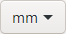

1.2. Erstellung der Solarzelle¶
Wir wollen nun den Aufbau und die Funktionen von Inskcape direkt an Beispielen kennenlernen. Beginnend dazu verwenden wir eine Darstellung zum schematischen Aufbau einer Solarzelle.
1.2.1. Recherchematerial¶
{kind=link}
In der Kunst gibt es ein schönes Zitat von Gary Panter:
“If you have one person you’re influenced by, everyone will say you’re the next whoever. But if you rip off a hundred people, everyone will say you’re so original!” Gary Panter
Um etwas mehr in der Wissenschaft zu bleiben noch ein Zitat von Isaac Newton:
“If I have seen further it is by standing on the shoulders of giants.” Isaac Newton
Im Kern geht es darum: Alles was man erstellt ist ein Produkt von Dingen die man zuvor gesehen hat.
Besonders wenn man etwas neues lernen will (wie wir jetzt mit Inkscape) hilft es sehr, sich an Abbildungen zu orientieren, die einen optisch ansprechen und versucht diese selbst zu erstellen bzw. zu reproduzieren. Nun also zurück zu unserem Solarzellen Beispiel.
Wir fangen an und suchen uns Referenzbilder für den Aufbau der Solarzelle. Im besten Fall kann man auch Fachliteratur zurückgreifen, wir verwenden zur Vereinfachung die Bildersuche mit der Suchmaschine Ihrer Wahl z.B. hier die Bildersuche mit Ecosia (Link)
{kind=link}
Fig. 1.23 Beispiel Ecosia Bildersuche¶
Wir nehmen uns nun eine Abbildung die uns inhaltlich und optisch am ehesten zusagt als Vorlage für unser erstes Beispiel.

Fig. 1.24 Ausgesuchtes Beispiel Quelle: https://www.solaranlage.de/technik/solarzellen¶
Um frei verwendbare Referenzen zu bekommen, empfiehlt sich die Verwendung von pixabay oder unsplash
Zur Vereinfachung würde ich die Abbildung auf eine 2D Darstellung zurückführen. Hier nun das Ergebnis was wir erstellen wollen:
{kind=link}
Fig. 1.25 Eigene Version¶
1.2.2. Ebenen¶
Ebenen sind hilfreich um Sachen zum gruppieren von Objekten bzw diese zu blockieren (damit Sie nicht angeklickt und verändert werden können) oder um die Sichtbarkeit ein/auszuschalten.
{kind=link}
EBENEN
(SHIFT + STR + L) oder (Icon in der Commands-Bar (oben))
oder (Menu bar → Ebene→ Ebenen)

ToDo:
Erstellen Sie eine neue Ebene mit dem Namen (Recherchematerial) und positionieren Sie diese unter der “Ebene 1”

Fig. 1.26 Beispiel für die Erstellung einer Ebene¶
Bei der Ebenenpositionierung wird festgelegt in welcher Reihenfolge die Objekte übereinander dargestellt werden.
Durch das Blockieren können Ebenen nicht mehr ausgewählt und verändert werden. Dies ist besonders hilfreich um nicht ungewollt etwas auszuwählen.
Die Sichtbarkeit kann ausgeblendet werden und beim Export werden diese Ebenen dann auch nicht im Bild sichtbar sein.

Fig. 1.27 Sichtbarkeit und Bearbeitung von Ebenen und Positionierung¶
ToDo:
Kopieren Sie das Bild aus der Bildersuche (im Browser Rechtsklick auf das Bild → Kopieren ).
Wählen Sie die Ebene “Recherchematerial” aus und fügen Sie das kopierte Bild mit (STR + V) in Inkscape ein.
Wenn Das Bild als Datei vorliegt können Sie Bilder aus dem Dateiexplorer direkt per Drag&Drop in das Inkscape Fenster ziehen
ToDo:
Positionieren Sie nun das Bild mit dem Auswahltool durch Anklicken und verschieben so wie Sie es haben wollen (vermutlich außerhalb der Page Area)
{kind=link}
AUSWAHL TOOL
(S) oder (Icon in der Toolbox (links))
ToDo:
Blockieren Sie die Ebene “Recherchematerial” anschließend mit dem Klick auf das Schloss neben dem Namen im Ebenenfenster.
Objekterstellung Rechteck-Tool¶
ToDo:
Wählen Sie nun die “Ebene 1” aus benennen Sie diese um in “Solarzelle” (Doppelklick auf den Namen im Ebenenfenster)
Objekte werden immer in der ausgewählten Ebene erstellt. Wenn Sie kein Objekt erzeugen können kann es daran liegen, dass Sie eine Ebene ausgewählt haben die blockiert ist.
ToDo:
Wählen Sie das Rechteck-Tool aus
{kind=link}
RECHTECK TOOL
(R) oder (Icon in der Toolbox (links))
1.2.3. Snapping¶
Wir wollen nun bei der Erstellung der Geometrie unser Gitter nutzen.
ToDo:
Überprüfen Sie ob Sie die Standardeinstellung für das Snapping (Bild Rechts) so eingestellt haben.
Das Ein und Ausschalten des Snapping erfolgt über den obersten Button oder die Taste % (SHIFT + 5)
Das Snapping ist auch hilfreich beim ändern der Größe oder beim verschieben.
Wenn Sie mit dem Cursor über das jeweilige Feld in der Snapping Leiste rechts fahren wird Ihnen erklärt was jede Option genau macht.

ToDo:
Erstellen Sie nun mit dem Rechteck Tool ein den unteren blauen Bereich der Solarzelle (z.B. in Breite 70mm und Höhe 50mm)
{kind=link}
Fig. 1.28 zu erstellender Bereich¶
Falls Sie das Gitter ausgeblendet haben, können Sie es mit # wieder einblenden,
1.2.4. Füllung und Kontur¶
Flächenobjekte (wie z.B. Rechtecke und Kreise) haben immer eine Füllung und eine Kontur. Beides kann eine Farbe haben oder nicht vorhanden sein. Weiterhin kann man den Linientyp ändern (dazu gleich später mehr).
Von der ausgewählten Geometrie wird unten links wird immer die Kontur- und Füllfarbe angezeigt, sowie die Konturdicke und die aktuelle Ebene

Fig. 1.29 Schnelleinstellungen für Füllung und Kontur¶
Mit Rechtsklick auf die Konturdicke kann diese geändert werden.
Änderung der Konturfarbe : SHIFT + Mausklick auf Farbe (aus Palette unten)
Änderung der Füllfarbe : Mausklick auf Farbe (aus Palette unten)
Möchte man die Kontur ausstellen kann man mit SHIFT + Mausklick auf das X (ganz links in der Palette). Gleiches funktioniert für die Füllung (ohne die Shift Taste)

Fig. 1.30 Beispiel für Einstellung der Konturdicke sowie das Ausstellen der Kontur und die Einstellung der Füllfarbe¶
Es wird wird jedoch empfohlen Farben mit weniger Sättigung zu nehmen. Dazu gibt es im Bereich der Farbpaletten einige Auswahl.
{kind=link}
Fig. 1.31 Farbpalette mit weniger Sättigung¶
Eine weitere Möglichkeit wäre mit Füllung und Kontur

FÜLLUNG UND KONTUR
(Shift + STR + F) oder (Icon in der Commands-Bar (oben))
{kind=link}
Im Reiter Füllung kann über die Option HSL folgenes eingestellt werden:
Hder Hue (also die Farbe)Sdie Sättigung (wie intensiv ist die Farbe)Ldie HelligkeitAder Alphawert (also die Transparenz)
1.2.5. Pipetten Tool¶
Zuletzt kann die Füllung noch mit dem Pipetten Tool (z.B. aus unserer Referenz gezogen werden)

PIPETTEN TOOL
(R) oder (Icon in der Toolbox (links))
mit der Tastenkombination Shift + Mausklick auf den Farbbereich kann die Farbe auch für die Kontur übernommen werden
{kind=link}
ToDo:
Erstellen Sie nun ein weiteres Rechteck über dem ersten mit einer dunkleren Farbe
(z.B. in Breite 70mm und Höhe 30mm)
So sollte unsere Solarzelle jetzt nun aussehen:

1.2.6. Bezierkurven Tool¶
Wir zeichnen nun die Linie zwischen den zwei Bereichen mit dem Bezierkurven Tool

BEZIERKURVEN TOOL
(B) oder (Icon in der Toolbox (links))
ToDo:
Wählen Sie das Bezierkurven Tool und zeichnen Sie eine weiße Linie der Dicke 0,75mm zwischen die zwei Rechtecke
Um den Endpunkt beim Bezierkurven Tool zu setzen müssen die einen Doppelklick verwenden

Fig. 1.33 Zeichnen der Mittellinie¶
ToDo:
Duplizieren Sie die mittlere Linie (Str +D) und verschieben Sie diese mit SHIFT + PFEILTASTE HOCH zwei mal nach oben. Wiederholen Sie den Vorgang um eine Linie unterhalb zu erzeugen.

Fig. 1.34 Duplizieren der Mittellinie¶
Selektieren Sie die obere und untere Linie und öffnen Sie Füllung und Kontur (Shift + Str + F) und wählen Sie einen Liniendicke von 0,4mm und einen gepunkteten Linientyp Ihrer Wahl.
1.2.7. Füllung und Kontur (Linientyp)¶
FÜLLUNG UND KONTUR
(Shift + STR + F) oder (Icon in der Commands-Bar (oben))

ToDo:
Erstellen Sie ein positiv geladenes Teilchen mit dem Kreis Tool (Shift gedrückt halten für Kreis) und dem Bezierkurven-Tool mit weißer Farbe und einer Linienstärke von 0,5mm
1.2.8. Kreis/Ellipse/Bogen Tool¶

KREIS/ELLIPSE/BOGEN TOOL
(E) oder (Icon in der Toolbox (links))
Kreis/Ellipse vom Mittelpunkt aus erstellen**: SHIFT** gedrückt halten
Kreis erstellen**: STR** gedrückt halten
{kind=link}
Wenn Sie nur eine Kreiskontur erstellen wollen, entfernen Sie vorher die Füllung (Mausklick auf X in der Farbpalette) und wählen Sie eine Farbe für die Kontur (Shift + Mausklick auf Farbe in Palette)
So würde dies dann aussehen:

Fig. 1.35 Erstellung eines positiv geladenen Teilchens¶
1.2.9. Gruppieren¶
Neben den Ebenen gibt es eine weitere Möglichkeit der Strukturierung von Objekten, dies ist die Gruppierung. In unserem Fall können wir unsere positiv geladenes Teilchen (Kreis mit dem + Symbol) als eine Gruppe zusammenfassen um diese Gruppe dann durch einen Klick auswählen und damit einfacher zu positionieren.

GRUPPIERUNG ERSTELLEN
Objekte auswählen + STR + G oder (Icon in der Commands-Bar (oben))
{kind=link}
GRUPPIERUNG AUFHEBEN
Gruppierung auswählen + STR + SHIFT + G oder (Icon in der Commands-Bar (oben))
ToDo:
Duplizieren Sie das positive Teilchen und verschieben es, so das man beide sehe kann. Anschließend löschen Sie die vertikale Linie um ein negativ geladenes Teilchen zu erstellen. Anschließend Gruppieren (STR+G) Sie beide Teilchen jeweils einzeln wieder.
Nun wollen wir jeweils 3 positive und 3 negative Teilchen auf der Solarzelle verteilen. Dafür müssen wir diese jeweils Duplizieren (STR+D) und diese bewegen bzw. ausrichten. Wie dies geschieht erfahren wir im folgenden:
1.2.10. Objekte bewegen¶
Prinzipiell gibt es drei Möglichkeiten zur Positionierung von Objekten
Mit der
Maus(mit/ohne Snapping)Mit den
Pfeiltastenin definierten Schritten (klein/normal/groß)Mit dem Tool
Objekte Ausrichten
Ich persönlich benutze am meisten das Objekte Ausrichten Tool, weil es am vielfältigsten ist und man die Sachen genau ausrichten kann.
Objekt Bewegung mit den Pfeiltasten ⬅️/➡️/⬆️/⬇️¶
Dies ist besonders hilfreich wenn man Objekte dupliziert (STR+D) und diese dann in einem definierten Abstand davon weg bewegen will
Ich nutze oft die Option mit den großen Schritten (SHIFT+PFEILTASTEN) und zähle dann z.B. die Schritte um es bei der Wiederholung im gleichen Abstand zu erstellen.
BEWEGUNG MIT DEN PFEILTASTEN
kleiner Bewegungsschritt**:** ALT + ⬅️/➡️/⬆️/⬇️
normaler Bewegungsschritt**:** ⬅️/➡️/⬆️/⬇️
großer Bewegungsschritt**:** SHIFT + ⬅️/➡️/⬆️/⬇️
Objekt Bewegung mit dem Objekte Ausrichten Tool¶

OBJEKTE AUSRICHTEN
(Shift + STR + A) oder (Icon in der Commands-Bar (oben))
Wir beschränken uns zunächst auf den Ausrichten Teil des Tools:

Wenn wir an einem Objekt ausrichten wollen was in einer Gruppierung ist, müssen wir dieses ggf aus der Gruppierung entfernen (STR + SHIFT + G)
Wir starten mit dem Ausrichten Relativ zu Zuletzt gewählt und wollen nun ein Teilchen mittig an einer Linie (die wir zuletzt auswählen) ausrichten:

{kind=link}
Nun wollen wir, dass das Teilchen direkt an der Oberkante unseres unteren Rechtecks liegt. Damit wir das untere Rechteckt anklicken können muss man es ggf. aus der Gruppierung entfernen (Gruppierung auswählen + STR + SHIFT + G)


Neben der vertikalen Ausrichtung gibt es das gleiche natürlich auch für die horizontale Ausrichtung
Zur Veranschaulichung der Verteilungsfunktion habe ich ein paar mehr Teilchen erstellt, dies ist nicht Teil der finalen Abbildung
Besonders praktisch ist die Funktion Verteilen die sich unterhalb von Ausrichten befindet. Hier ein Beispiel wo wir zunächst vertikal ausrichten am letzten Objekt und diese Objekte anschließend im gleichen Abstand verteilen


Wenn wir nun die äußerste Teilchen weiter nach außen bewegen und dann neu verteilen sie es so aus:


Nun könnte man z.B. alle 7 Teilchen gruppieren (STR+G) und diese Gruppe wiederum z.B. an der Linie ausrichten

{kind=link}
Besonders praktisch ist die Funktion, wenn man wie im unten gezeigten Beispiel ein Objekt dupliziert (das Duplikat ist dann automatisch ausgewählt) und danach ein Referenzobjekt zur Ausrichtung auswählen, an dessen man das neue Duplikat ausrichten möchte

{kind=link}
Neben Zuletzt gewählt gibt es viele andere Referenzmöglichkeiten.
Ich persönlich nutze fast immer Zuletzt gewählt und in seltenen Fällen Seite als Referenz.

ToDo:
Verteilen Sie die Teilchen so wie unten in dem Bild und benutzen Sie dafür das Ausrichten Tool
{kind=link}
Fig. 1.36 So sollten die Teilchen am Ende verteilt sein¶
Damit die gepunktete Linie nicht im Kreis sichtbar ist, kann man mit dem Pipetten-Tool die Füllung der Rechtecke übernehmen.
{kind=link}
Fig. 1.37 Ohne Füllung im Kreis (Linie im Hintergrund sichtbar)¶

Fig. 1.38 Mit Füllung im Kreis (Linie im Hintergrund nicht mehr sichtbar)¶
1.2.11. Objektgröße ändern¶
Um die Objektgröße zu ändern gibt es drei Optionen:
Im Objekt selber
In der
Tool-Control-BarMit dem
TransformationsTool
Wir behandeln zunächst die ersten zwei, das Transformation-Tool lernen wir später kennen.
Objektgröße im Objekt ändern¶

Fig. 1.39 caption¶
{kind=link}
Snapping An

Knoten/Pfad einrasten
Eckpunkte**einrasten
Hinweis:
Hier ist der Eckpunkt im Gitter eingerastet,, wenn dieser im Bild nicht sichtbar ist, funktioniert das Einrasten auch nicht.
Aktivieren wir den Punkt Mittelpunkte einrasten, kann auch der Mittelpunkt einrasten, was uns im Zoom hilft, weil wir hier die Eckpunkte nicht sehen.

Fig. 1.40 Einrasten mit Mittelpunkt¶
Snapping An

Knoten/Pfad einrasten
Mittelpunkte**einrasten
Komplett ohne Snapping geht es natürlich auch. Das ist besonders hilfreich wenn man dünne Strukturen erstellen will die kleiner als das Gitter sind

Fig. 1.41 Größe ändern ohne Snapping¶

Snapping Aus
Größe einer Kontur ändern (mit/ohne) Skalierung¶
Wenn Sie die Größe Ihrer Teilchen ändern und die Position behalten, so müssen sie STR+SHIFT gedrückt halten. Zusätzlich gibt es in der Tool-Control-Bar eine Option die definiert ob sich die Kontur mit skaliert wird. Schauen wir uns dies mal im Beispiel an:

Fig. 1.42 Objektvergrößerung ohne Konturänderung¶

Konturskalierung Aus

Fig. 1.43 Objektvergrößerung mit Konturänderung¶

Konturskalierung An
Objektgröße in der Tool-Control-Bar¶
Wollen wir die Höhe genau auf einen Wert einstellen, so kann man dies über die Tool-Control-Bar machen.

Position (x/y) ändern

Breite/Höhe ändern + Seitenverhältnis sperren

Einheit festlegen
{kind=link}
{kind=link}
Fig. 1.44 Größe ändern in der Tool Control Bar¶
Objektgröße mit dem Transformations Tool¶
Wollen wir nun ein Objekt prozentual skalieren oder mehrere Objekte gleichzeitig ändern, so ist das Transformations Tool das Mittel der Wahl

TRANSFORMATION
(Shift + STR + M) oder (Menu bar → Objekt→ Transformation..)

Wollen wir z.B. alle Teilchen gleichzeitig skalieren (jedes Teilchen muss dabei eine eigene Gruppe sein) so kann dies der Option ☑️Auf jedes Objekt getrennt anwenden erfolgen

Fig. 1.45 Transformation mit Option Auf jedes Objekt getrennt anwenden¶


ToDo:
Zeichnen Sie nun noch zwei graue Metallkontakte ohne Kontur auf der Oberseite mit dem Rechteck Tool. Verwenden Sie das Pipetten Tool um die gleiche Füllfarbe wie im unteren Kontakt zu erhalten.
{kind=link}
Fig. 1.46 Detailansicht der Metallkontakte auf der Solarzelle¶
1.2.12. Linien mit Pfeilen¶
ToDo:
Zeichnen Sie einen Pfeil von oberen negativen Teilchen zum Kontakt mit dem Bezierkurven Tool und Füllung und Kontur
Zur Erinnerung:
BEZIERKURVEN TOOL
(B) oder (Icon in der Toolbox (links))
FÜLLUNG UND KONTUR
(Shift + STR + F) oder (Icon in der Commands-Bar (oben))
Will man eine vertikale Linie mit dem Bezierkurven Tool erzeugen muss man STR gedrückt halten
{kind=link}
Fig. 1.47 Linie mit Pfeil erstellen¶
Wenn Sie nun die Länge des Pfeiles ändern wollen ohne die Linienstärke zu ändern, müssen Sie die Option der Konturskalierung (in der Tool-Control-Bar) ausschalten
ToDo:
Wählen Sie eine entsprechende eine Pfeilgeometrie , Liniendicke und Farbe aus
In meinem Fall habe ich eine Liniendicke von 0,3mm verwendet und das erste Gelb unten in der Palette verwendet.

Fig. 1.48 So könnte es dann zum Beispiel aussehen¶
{kind=link}
Fig. 1.49 duplizieren und spiegeln des oberen Pfeils¶
ToDo:
Duplizieren Sie den oberen Pfeil (STR+D) und spiegeln Sie diesen um Ihn für die Unterseite zu verwenden
ToDo:
Erstellen Sie nun einen weiteren Pfeil mit zwei Spitzen zwischen den mittleren Teilchen
Ein möglicher Lösungsweg:
Den ersten Pfeil duplizieren (
STR+D)Mit
Ausrichtenden duplizierten Pfeil mittig vom Teilchen ausrichtenIn
Füllung und Konturdie zweiteKnotenmarkierungeinstellen damit Pfeil in beide Richtungen zeigt
Vertikale Position mit
Pfeiltasten+SHIFTgrob einstellenLänge des Pfeils direkt am Objekt final einstellen
{kind=link}
Somit ist unsere Solarzelle erstmal fertig:
Ich habe die höhe des unteren Kontaktes noch mal erhöht, damit der Pfeil auch im Kontakt zu sehen ist
{kind=link}
Fig. 1.50 Finale Version der Solarzelle¶
ToDo:
Blockieren Sie nun die Ebene “Solarzelle” (da wir damit erstmal fertig sind) und erstellen Sie eine neue Ebene “Sonne” über der Ebene “Solarzelle”.
Im folgenden werden wir nun die Sonne erstellen …